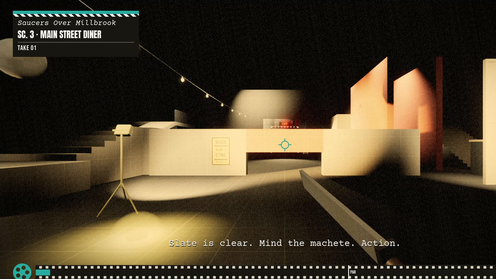
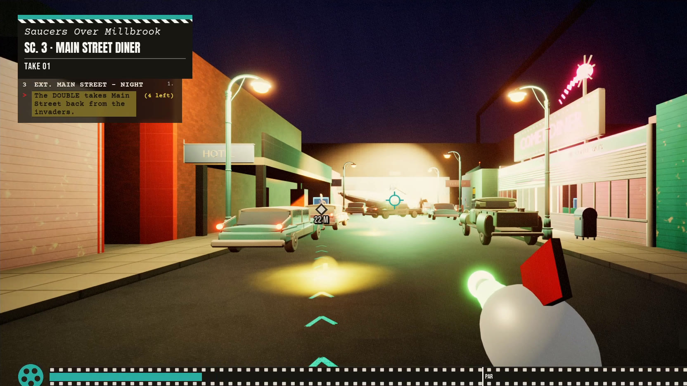
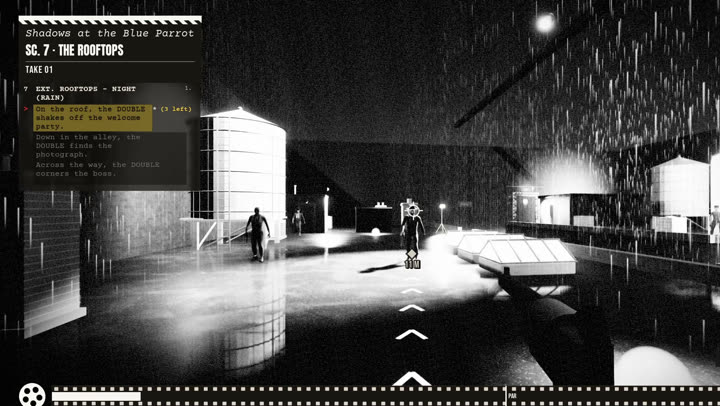

The first frame of every scene, reframed
Overnight the second World session treated each level's starting view as a film's opening shot, lit and framed around the hero piece, and the World session set the rain, steam and bulbs running on game time.
Day 2, Fri 13 NovHour 47
The first thing you see in a level is whatever the player start happens to face. At 23:31 the Director gave the second World session a night task: make every level's first view an opening shot, the way a film would.
It wrote one helper and ran it on all seven levels. It puts a key light and a back light on each level's hero piece, then checks that the first group of enemies is actually in frame. After that came per-level nudges: turn the Noir 01 start 12 degrees, move a car out of the lower left of UFO 01's frame, turn the Zombie 02 start 58 degrees, move the finale's crate stack off the centre line.


BeforeAfterThe Director's reviewer on the 01:30 reels: "U1 transformed".
 UFO 02 opens on the farm: the saucer overhead, the windmill, the silo, aliens in the yard.
UFO 02 opens on the farm: the saucer overhead, the windmill, the silo, aliens in the yard.
Noir 02 opens on the rooftops, in the rain. Zombie 02 opens on the motel, with zombies already coming.
Zombie 02 opens on the motel, with zombies already coming.


Sets that wait for you
The World session's night task was "living sets": things that move on their own. Rain, steam from air-conditioning units, fans, swinging bulbs, a flickering tube, chasing marquee bulbs. They now run in all eight levels, and they run on game time. Stand still and the rain hangs in the air like everything else. Move and it falls.
Not everything landed. The 01:30 review found the Zombie 01 opening weaker than before, and the finale's crates still in frame. Both were fixed at 02:58 and wait for the next film.